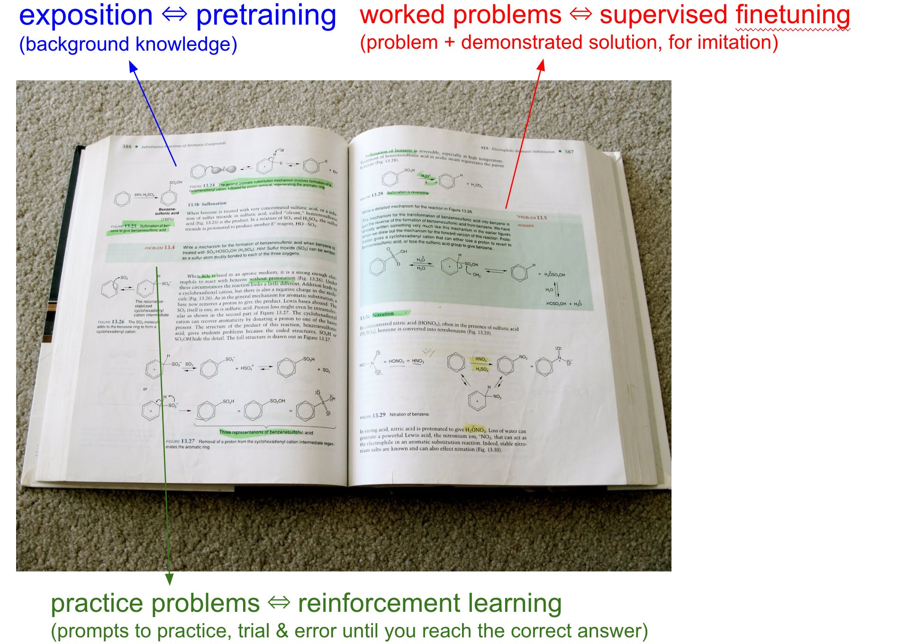
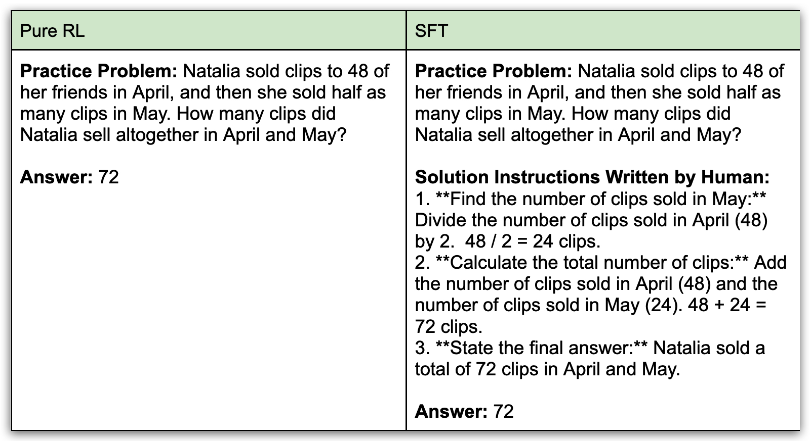
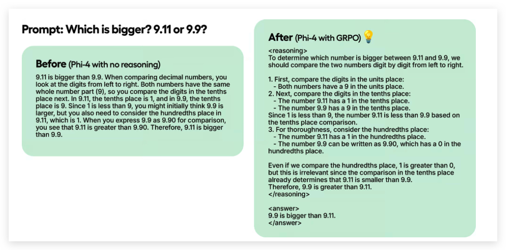
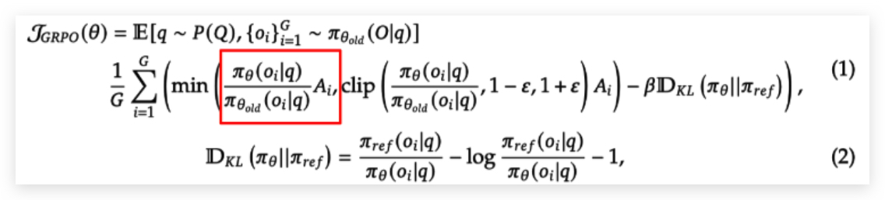
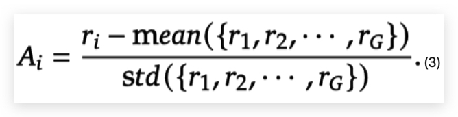

Introduction
“There are two major types of learning, in both children and in deep learning. There is 1) imitation learning (watch and repeat, i.e. pretraining, supervised finetuning), and 2) trial-and-error learning (reinforcement learning). Almost every single shocking result of deep learning, and the source of all magic is always 2. 2 is the”aha moment” when DeepSeek (or o1 etc.) discovers that it works well to re-evaluate your assumptions, backtrack, try something else, etc.” quote from Andrej Karpathy.
We answer four questions about DeepSeek-R1-Zero What are the contributions of DeepSeek-R1-Zero? What does the DeepSeek-R1-Zero training process look like? understand the Group Relative Policy Optimization (GRPO) algorithm in detail What makes R1-zero work, is it GRPO or something else?
Don’t worry about these Reinforcement Learning (RL) and Large Language Model (LLM) concepts, e.g. policy, action, etc. They don’t affect the understanding, which is the purpose of this article. I translate these concepts to its corresponding terms in the context of DeepSeek-R1-Zero in the below table. If there is anything unclear, please comment. So, let’s get started!
| RL/LLM Concepts | Corresponding terms in the context |
|---|---|
| Policy | LLM model |
| Policy Action | The output of the LLM given a prompt |
| Prompt | Training example |
Question 1: What are the contributions of DeepSeek-R1-Zero?
DeepSeek-R1-Zero’s key breakthrough is proving that large language models (LLM) can develop strong reasoning abilities a.k.a problem solving skills through practice alone, without first being shown how to solve problems. Think about learning mathematics: traditionally, a teacher first demonstrates how to solve each type of problem step-by-step, and then students practice similar problems on their own. DeepSeek-R1-Zero shows that an AI can become excellent at problem-solving by skipping the demonstration phase and jumping straight to practice – learning purely from trial and error. This not only simplifies the training process but also allows the AI to discover its own creative ways of reasoning, rather than just imitating human examples.
Let’s think of training an AI model like teaching a student. Credits go to Andrej Karpathy
Building a Foundation (Pretraining): First, the child learns basic knowledge - reading, writing, math facts. This is like “pretraining” an AI, where it absorbs vast amounts of information from the internet, building a foundation of general knowledge.
Showing Examples (Supervised Fine-Tuning/SFT): is like showing the student solved examples with detailed steps. A teacher explains step-by-step how to solve specific problems, similar to how models are fine-tuned on ideal step-by-step responses written by humans.
Practice Makes Perfect (Reinforcement Learning/RL): Finally, the child practices solving problems on their own, getting feedback on whether they got the right answer (but not how to get there). They learn through trial and error, figuring out their own strategies. This is like “Reinforcement Learning” (RL), where the AI is given problems and rewarded for finding the correct solution, even if it takes a roundabout path.

DeepSeek-R1-Zero demonstrates that large language models (LLM) can develop strong reasoning skills using only Reinforcement Learning (RL), without needing the traditional step of Supervised Fine-Tuning (SFT). Unlike previous methods that relied heavily on labeled data (showing the AI how to solve problems step by step) to teach models how to reason, DeepSeek-R1-Zero shows that reasoning abilities—like checking its own answers, thinking step-by-step, etc—can emerge naturally through RL alone. This breakthrough proves that models can learn to solve complex problems just by practicing and receiving feedback (correct or not), simplifying the training process and opening potentially more powerful ways to build AI reasoning capabilities.

Note: this practice problem will go through this article as an example until the end.
Question 2: What does the DeepSeek-R1-Zero training process look like?
The goal of training is to “steer” the base LLM (like GPT-4o or DeepSeek V3) towards generating correct and well-formatted answers more consistently. Think of it like upgrading the model – from GPT-4o to a hypothetical “o3-mini-high,” or from DeepSeek V3 to DeepSeek-R1-Zero.
The left side of the below figure is the base model while the right side is the prompted version with GRPO based RL training. As you can see the left one fails at the question while the right one succeeds also with the reasoning process. The figure comes from reference 4.

Here’s how it works:
Prompting the Model: We feed a practice problem (like the math problem about Natalia’s clips in the below table) to the current version of the LLM, which we’ll call the “old LLM.”
Generating Responses: run the old LLM with the practice problem as prompt several times to get answers (technically called “completions”). Some of these might be correct, some incorrect, and some might have formatting issues.
Scoring the Responses: A “reward function” evaluates each response, assigning scores based on: Correctness: How accurate the answer is. Format: Whether the response follows a desired structure (e.g., showing its steps).
Updating the Model: The crucial step! Using a specialized algorithm called GRPO (Generalized Relative Policy Optimization), the LLM’s internal parameters (the “weights” that control its behavior) are adjusted. These adjustments are guided by the reward scores: responses with higher scores “pull” the model’s parameters in their direction, making it more likely to generate similar responses in the future. This updated model is now the “new LLM.”
Iteration: We set the “old LLM” to be the “new LLM” (the updated version) and repeat steps 1-4 many, many times. With each iteration, the model gets progressively better at generating correct and well-formatted answers. This iterative process continues until we have a version of the LLM with significantly improved reasoning abilities – in this case, DeepSeek-R1-Zero.
It’s like teaching through trial and error - the model keeps attempting problems, learns from its successes and failures, and gradually becomes better at solving them. The final result is a more capable model like DeepSeek-R1-Zero.
Let’s dive deep into reward functions a bit. The DeepSeek paper mentioned two types of rewards: accuracy and format. An implementation could be but not limited to as below.
Code Example
# Your code here
def correctness_reward_func(prompts, completions, answer, **kwargs) -> list[float]:
responses = [completion[0]['content'] for completion in completions]
q = prompts[0][-1]['content']
extracted_responses = [extract_xml_answer(r) for r in responses]
print('-'*20, f"Question:\n{q}", f"\nAnswer:\n{answer[0]}", f"\nResponse:\n{responses[0]}", f"\nExtracted:\n{extracted_responses[0]}")
return [2.0 if r == a else 0.0 for r, a in zip(extracted_responses, answer)]# Your code here
def strict_format_reward_func(completions, **kwargs) -> list[float]:
"""Reward function that checks if the completion has a specific format."""
pattern = r"^<reasoning>\n.*?\n</reasoning>\n<answer>\n.*?\n</answer>\n$"
responses = [completion[0]["content"] for completion in completions]
matches = [re.match(pattern, r) for r in responses]
return [0.5 if match else 0.0 for match in matches]Question 3: understand the Group Relative Policy Optimization (GRPO) algorithm in detail
 
The GRPO algorithm, as described in the paper, begins by sampling a group of outputs {o_1, o_2, …, o_G} from the old LLM (denoted as π_θold). This is done by feeding the same training example (the prompt, q) to the old LLM multiple times and collecting the different responses it generates.
The training then focuses on maximizing the objective function (equation (1)). This objective function is, at its core, a complex function of the new LLM’s parameters (θ). Standard gradient descent algorithms can be used to efficiently update these parameters and maximize the function’s value.
The key to understanding how GRPO improves the LLM lies in maximizing the objective function (equation (1)). And the heart of that process is within the part highlighted by the “red rectangle.”
Let’s zoom into the red rectangle, which contains two parts: (1) probability ratio (2) Advantage function Ai. Advantage function Ai is defined in the equation (3) and pretty straightforward. A_i tells us whether a particular output (o_i) is better or worse than the average output for a given prompt. If the reward (R_i) for o_i is higher than the average reward, A_i is positive (good). If the reward for o_i is lower than the average reward, A_i is negative (bad).
Probability ratio: measures how much the probability of generating the completion o_i for prompt q has changed between the new policy π_and the old policy π_{_{old}}. - Ratio > 1: The new LLM is more likely to generate o_i than the old LLM. - Ratio < 1: The new LLM is less likely to generate o_i than the old LLM.
The Magic: Multiplying Ratio and Advantage - If A_i > 0 (good completion) and Ratio > 1 (new policy makes it more likely), we want to encourage this change. We want to increase the probability of generating this good completion even more. - If A_i > 0 and Ratio < 1 (new policy makes it less likely), we want to discourage this change. We want to increase the probability of generating this good completion. - If A_i < 0 (bad completion) and Ratio > 1 (new policy makes it more likely), we want to discourage this change. We want to decrease the probability of generating this bad completion. - If A_i < 0 and Ratio < 1 (new policy makes it less likely), we want to encourage this change. We want to decrease the probability of generating this bad completion even further.
Beyond the Red Rectangle: Stability and Generalization
The “clip” and “KL” terms in the full objective function play important roles in ensuring the training process remains stable and the model generalizes well:
Clipping (clip): The clip function acts like a “brake,” preventing the probability ratio from changing too drastically in a single update. This avoids large, potentially destabilizing parameter adjustments.
KL Divergence (KL): The KL divergence term measures how much the new LLM’s behavior differs from a “reference” policy (often the old LLM). By penalizing large deviations, we encourage the model to improve incrementally and retain some of its desirable characteristics. This helps the model perform well on new, unseen problems and encourages exploration of different solutions.
Question 4: What makes R1-zero work, is it GRPO or something else?
As an engineer with no prior LLM/RL experience, I found the GRPO algorithm surprisingly understandable after just a weekend of study. It’s essentially a refined version of the established PPO algorithm, so for experts in the field, it’s likely not a revolutionary leap. The real challenge, and where DeepSeek-R1-Zero truly shines, is in the engineering implementation, for example how to define the reward functions. This highlights the critical importance of exceptionally talented engineers, perhaps even more so than simply acquiring more computing power.
The idea of using pure RL to improve a base model isn’t new, but previous attempts haven’t matched DeepSeek’s results. I suspect two key factors are at play: first, a very strong foundation in the base model itself; and second, the quality of the training data (the practice problems). DeepSeek hasn’t open-sourced their training data, which is a strong indication of its crucial and proprietary nature.
In essence, DeepSeek-R1-Zero’s success likely boils down to a potent combination of: brilliant engineering, carefully curated training examples, and a robust base model.
This article is a collaboration with DeepSeek-R1, Gemini 2.0 Flash Thinking Experimental 01-21 (Google really needs to work hard on the naming), ChatGPT o3-mini-high, Claude. Gemini is slightly better than R1, but both of them are better than o3-mini-high in terms of reasoning. Claude is still really good at polishing writing but Gemini 2.0 Pro Experimental 02-05 is at least comparable. The conclusion is there is no need to be a member of Claude anymore. :-).
Reference
- 深度强化学习(1/5)：基本概念 Deep Reinforcement Learning (1/5)
- https://x.com/karpathy/status/1885026028428681698
- DeepSeek-R1: Incentivizing Reasoning Capability in LLMs via Reinforcement Learning, link
- Train your own R1 reasoning model with Unsloth (GRPO) link
- https://gist.github.com/willccbb/4676755236bb08cab5f4e54a0475d6fb